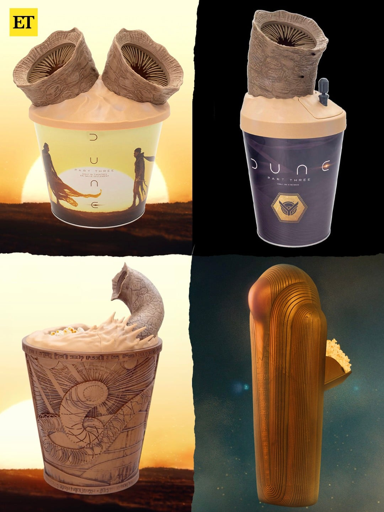

45 · 13 · 3 시간 전 · 원문

치이카와 보다가 이거 보니까 정신 나갈 거 같아
수집 당시 댓글 13개
교미왕도킹 · 3 시간 전
다들 그생각하고있는거 아니지?
aligote · 3 시간 전
이미 흑인커뮤니티에선 자기 물건보다 작은지 큰지 비교하는 Dune Popcorn Tong Challenge 중
매콤챱스 · 3 시간 전
음..
Yegor · 3 시간 전
샤이 훌루드 ㅋㅋ
현자 · 3 시간 전
스파이시한 맛인가요
아이스티 · 2 시간 전
DP ㄷㄷ
유리무릎 · 2 시간 전
2번 귀여운데
ᅠᅟᅠ · 2 시간 전
이야 이거 모두를 위한 디자인인데요 ㅋㅋ
로보트 · 2 시간 전
시라누이Q · 2 시간 전
흠. 구멍이 좀 작은데.
이렀게않돼나요 · 2 시간 전
둘이서 할수있겠네
라루루 · 48 분 전
징그럽
게임은PC로 · 2 분 전
와 공식 오나홀

다들 그생각하고있는거 아니지?